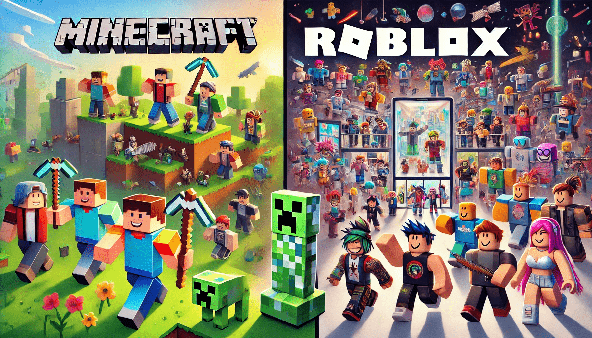

When it comes to sandbox games, Minecraft and Roblox are the reigning champions. These two giants have captivated millions of players around the world with their endless creativity, immersive gameplay, and unique features. But which one takes the crown? Let's dig into the nitty-gritty of Minecraft APK and Roblox, comparing their strengths, weaknesses, and what makes each one a favorite for gamers. Let’s throw in a sprinkle of humor along the way to keep things light!
Minecraft APK
Minecraft APK is the mobile version of the legendary block-building game that has been a cultural phenomenon since its inception in 2009. Known for its pixelated graphics and endless creative possibilities, Minecraft allows players to build, mine, and survive in a procedurally generated world. The APK version brings the same experience to your mobile devices, with touch controls and portability.
Roblox
Roblox isn’t just a game; it’s a platform where users can create and share their own games. Launched in 2006, it’s a vibrant hub of user-generated content where imagination knows no bounds. From obstacle courses to role-playing adventures, Roblox offers a buffet of gaming experiences.
Minecraft APK: Let There Be Blocks
Minecraft is like digital Lego on steroids. Players can roam the sandbox world in two main modes:
It’s simple: if you can dream it, you can build it. Want to recreate the Eiffel Tower? Go for it. Planning a pixel-art version of your cat? No judgment here. Minecraft focuses heavily on creativity and exploration, which makes it a haven for introverted architects.
Roblox: A Social Playground
Roblox, on the other hand, is more of a social experience. Instead of mining or crafting, you’re likely to find yourself playing a game someone else designed. With thousands of games in genres ranging from horror to racing, there’s something for everyone. The real charm of Roblox is its community. You can team up with friends, meet strangers, and flex your creativity by building games for others to enjoy.
Minecraft APK: Nostalgic Simplicity
Minecraft’s graphics are unapologetically retro. The blocky aesthetic is iconic, and while it may not win any awards for realism, it’s oddly charming. Plus, the simplicity ensures it runs smoothly on a wide range of devices, including toasters. Okay, maybe not literal toasters, but close enough.
Roblox: Diverse Styles
Roblox doesn’t have a unified graphical style since each game is created by a different user. Some games boast polished, 3D visuals, while others look like they were made during a coffee-fueled coding sprint. This inconsistency can be both a blessing and a curse.
Minecraft APK: Small Circles, Big Fun
Multiplayer in Minecraft APK is usually more intimate. You can invite friends to join your world or hop onto servers with mini-games like BedWars and SkyBlock. The vibe is chill and cooperative, making it great for people who prefer smaller, closer-knit groups.
Roblox: The Social Butterfly
Roblox thrives on its massive community. With millions of active users, it’s like the gaming world’s equivalent of Times Square—chaotic, lively, and full of surprises. You can join games with hundreds of players, collaborate on projects, or just hang out and chat. Just be ready for the occasional random kid spamming the chat with “PLZ DONATE.”
It’s like comparing apples to oranges—or in this case, blocks to...well, everything.
Choose Minecraft APK if you love building, exploring, and having full control over your creations. It’s perfect for players who want a relaxing yet rewarding experience.
Choose Roblox if you thrive on variety, social interactions, and endless mini-games. It’s ideal for those who enjoy hopping from one adventure to another and love a good community vibe.
Honestly, why not both? You can mine during the day in Minecraft and play hide-and-seek in Roblox at night. Either way, you’re in for hours of fun—just don’t forget to blink!